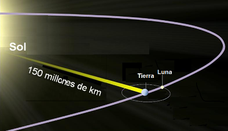
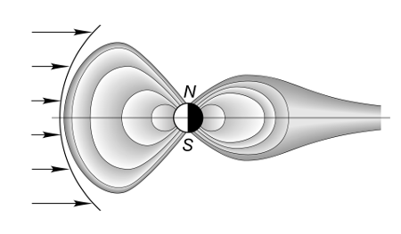

Según nuestros conocimientos hasta ahora, la Tierra es el único planeta del sistema solar que alberga vida. La existencia de la vida en la Tierra como la conocemos depende de factores físico-químicos que enumeramos a continuación.
1. La distancia al Sol. La Tierra se encuentra a una distancia de 150 millones de km del Sol. Eso hace que la temperatura media del planeta sea suave, de 15º C, aunque haya zonas más calurosas y zonas más frías en la superficie terrestre .
 |
| Imagen de C. Rosa en Wikimedia Commons bajo licencia CC |
Como consecuencia, se puede encontrar agua en estado líquido. Y el agua es imprescindible para la vida, pues en ella se realizan la totalidad de las reacciones químicas de nuestro metabolismo. Es tan importante que su falta ocasiona la muerte o falta de vida.
2. Su tamaño y densidad. Esto hace que la Tierra sea capaz de retener una atmósfera por acción de su gravedad. La atmósfera terrestre es una delgada capa de gases con una composición y presión adecuadas para permitir el desarrollo de los seres vivos (es rica en oxígeno, vital en los procesos de respiración de animales y vegetales).
| Imagen en Pixabay bajo Dominio Público |
La atmósfera deja pasar la luz visible con la que se realizan los procesos vitales para los vegetales (fotosíntesis) y hace de capa protectora de las radiaciones de alta energía (ultravioleta, rayos X, radiación gamma) gracias a un isótopo del oxígeno (el ozono).
3. La presencia de biolementos en su superficie. La abundancia de elementos químicos en la superficie como carbono, nitrógeno, fósforo…que combinados entre sí forman los componentes básicos de los organismos vivos.
| Imagen en publicdomainpictures bajo Dominio Público |
4. El campo magnético terrestre. La estructura interna de la Tierra genera un campo magnético que impide que la radiación solar llegase a la superficie terrestre. Esta radiación solar (principalmente rayos X y radiación gamma) es muy energética y sería muy peligrosa para los seres vivos si no tuviéramos la protección de esta barrera magnética.
 |
| Imagen de A. Babarik en Wikimedia Commons bajo Dominio Público |